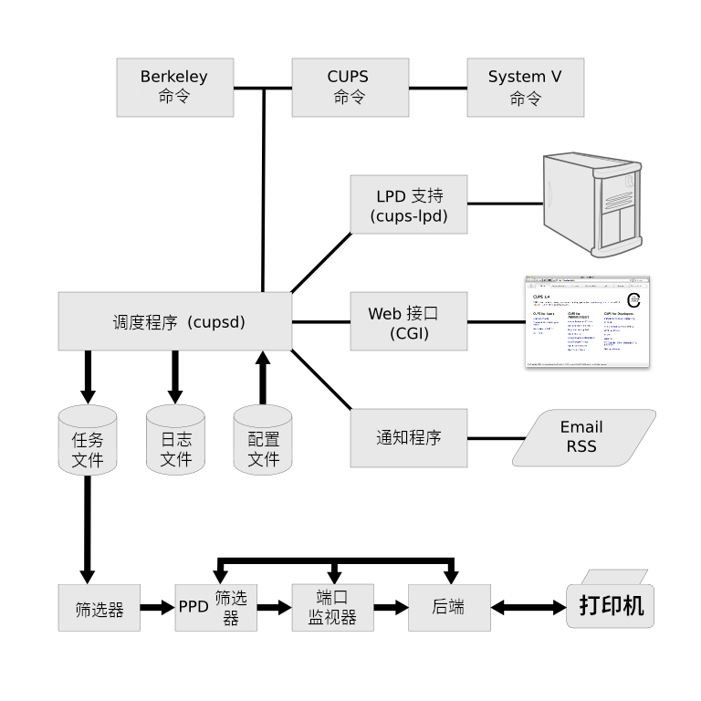

本设计说明记录了 CUPS 的总体组织结构。其目的不是提供 CUPS 源代码的逐行描述，而是描述关键部分的总体架构和位置，以便开发人员能够更轻松地理解 CUPS 的底层操作。
与大多数打印系统一样， CUPS 是围绕一个中央打印计划流程设计的，该流程可分派打印任务、处理管理命令、向本地和远程程序提供打印机状态信息，并根据需要通知用户。图 1 显示了 CUPS 的基本组织结构。
调度器是一个 HTTP/1.1 和 IPP/2.1 服务器应用程序，用于管理系统上的 HTTP 和 IPP 请求、打印机、类、任务、订阅和通知。 HTTP 用于正常的 Web 浏览器服务以及通过 HTTP POST 请求传递的 IPP 操作消息，该请求具有 application/ipp 内容类型。调度器使用一系列基于公共网关接口（“CGI”）的助手应用程序来提供动态 Web 接口，并且可以配置为运行 Web 接口的其他特定于站点的程序或脚本。
调度器被设计为传统的单线程服务器进程，它运行外部进程来执行长期操作，如打印、通知、设备/驱动程序枚举和远程打印机监控。外部进程通常作为非特权帐户（“lp”）运行，并且在某些平台上，附加限制限制了允许进程执行的操作。
可支持的并发客户端和打印任务的最大数量主要受服务器的可用内存、文件描述符和 CPU 的限制 － 调度器本身没有硬限制。
|  |
调度程序使用多个配置文件来存储服务器设置（ cupsd.conf ）、可用类（ classes.conf ）、可用打印机（ printers.conf ）、当前通知订阅（ subscriptions.conf ），以及支持的文件类型和筛选器（ mime.types ， mime.convs ）。此外， PostScript 打印机说明（ “PPD” ）文件与每台打印机关联，调度程序具有远程打印机的缓存文件、 PPD 文件和当前任务，以优化调度程序的启动速度和可用性。
调度程序将任务文件存储在 spool 目录中，通常为 /var/spool/cups 。在 spool 目录中可以找到两种类型的文件：控制文件 以字母 “c” （“c00001” 、 “C9999” 、 “c100000” 等）开头，以及数据文件以字母 “d” （ “d00001-001” 、 “d99999-001” 、 “d100000-001” 等）开头。控制文件是基于原始 IPP 打印任务或创建任务消息的 IPP 消息，而数据文件是提交打印的原始打印文件。系统已知的每个任务都有一个控制文件，每个任务有 0 个或多个数据文件。
控制文件通常在提交第 500 个任务后清除，而数据文件在任务成功打印后立即删除。这两种行为都可以配置。
调度程序保留三种日志文件，它们通常存储在 /var/log/cups 目录中。访问日志文件列出了调度器处理的每个 HTTP 和 IPP 请求。错误日志文件包含来自调度程序及其帮助程序应用程序的消息，可用于跟踪问题。页面日志文件列出了打印的每一页，允许进行简单的打印记帐。
当日志文件达到配置的大小限制（默认为 1MB ）时，调度程序会自动循环日志文件。如果将限制设置为 0 ，则不会在调度程序中执行循环 － Linux 发行版通常使用此模式，因此他们可以使用 logrotated(8) 程序来循环它们。
CUPS 提供 Berkeley lpc(8) 、 lpq(1) 、 lpr(1) 和 lprm(1) 命令。一般来说，它们的功能与原始 Berkeley 命令相同，但有以下例外：
CUPS 提供 System V cancel(1) ， lp(1) ， lpadmin(8) ， lpmove(8) ，以及 lpstat(1) 命令。一般而言，它们的功能与原始 System V 命令相同，但以下情况除外：
CUPS 提供了 cupsaccept(8) ， cupsaddsmb(8) ， cupsdisable(8) ， cupsenable(8) ， cupsreject(8) ， cupstestppd(1) ， lpinfo(8) 和 lppasswd(1) 命令。cupsacept 、 cupsdisable 、 cupsenable 和 cupsreject 命令对应于 System V accept 、 disable 、 enable 和 reject 命令，但已重命名以避免与同名的 bash(1) 内部 enable 命令混淆和冲突。
LPD 客户端通过 cups-lpd(8) 程序提供支持。本地 inetd(8) 、 launchd(8) 或 xinetd(8) 进程在 TCP 端口 515 上接受传入的 LPD 请求，并将其转发到 cups-lpd 程序，以转换为相应的 IPP 请求。
cups-lpd 程序在很大程度上符合 RFC 1179 ：行式打印机守护程序协议，但不强制执行该文档中指定的特权源端口限制。此外，当相应的超级守护程序调用标题页和输出格式选项时，通常会通过命令行选项覆盖 cups-lpd 程序。
Web 接口由五个 CGI 程序支持。表 1 描述了每个程序的目的。
| 程序 | 位置 | 说明 |
|---|---|---|
| admin.cgi | /admin | 提供所有管理功能 |
| classes.cgi | /classes | 列出类并提供类管理功能 |
| help.cgi | /help | 提供对联机帮助文档的访问 |
| jobs.cgi | /jobs | 列出任务并提供任务管理功能 |
| printers.cgi | /printers | 列出打印机并提供打印机管理功能 |
通知程序（ notifier(7) ）提供了从调度程序发送异步事件通知的方法。使用命令行上的收件人信息和标准输入上的事件数据执行通知程序。例如：
CUPS_SERVERBIN/notifier/foo recipient user-data
CUPS 包括两个通知程序：mailto 用于提供基于 SMTP 的电子邮件通知，rss 用于从调度程序提供真正简单的联合（ “rss” ）通知。可以根据需要在 notifier 目录中安装其他通知程序，以支持其他方法。
筛选器（ filter(7) ）将任务文件转换为可打印格式。根据需要运行多个筛选器，以将任务文件格式转换为可打印格式。筛选程序从标准输入或文件（如果提供文件名）中读取。所有筛选器必须支持一组通用选项，包括打印机名称、任务 ID 、用户名、任务标题、份数和任务选项。所有输出都被发送到标准输出。
CUPS 提供用于打印文本、 PostScript 、 PDF 、 HP-GL/2 和多种类型图像文件的筛选器。 CUPS 还为 HP-PCL 、 ESC/P 和几种类型的标签打印机提供打印机驱动程序筛选器。可以通过 mime.convs 和 PPD 文件向 CUPS 注册其他筛选器。
端口监视器处理打印机的特定于设备和通道的数据格式化。端口监视器使用与筛选器相同的接口。
CUPS 包括两个端口监视器：支持 PostScript 二进制通信协议（ “bcp” ）的 bcp 端口监视器和支持 PostScript 标记二进制通信协议（ “tbcp” ）的 tbcp 端口监视器。可以在 PPD 文件中注册其他端口监视器。
后端（ backend(7) ）将打印数据发送到打印机，并根据需要枚举可用的打印机/设备。后端使用与筛选器相同的接口。
CUPS 包括用于 AppSocket （ JetDirect ）、 IPP 、 LPD 和 USB 连接的后端，以及用于查找的 DNS-SD 和 SNMP 。可以根据需要添加其他后端，而无需额外配置。
CUPS 利用多个通用库提供打印服务。与其他 CUPS 不同，这些库是根据 GNU LGPL 的条款提供的，因此非 GPL 应用程序可以使用它们。
CUPS 库包含所有核心 HTTP 和 IPP 通信代码，以及用于排队打印任务、获取打印机信息、通过 HTTP 和 IPP 访问资源以及操作 PPD 文件的方便功能。调度程序和所有命令、筛选器和后端都使用此库。
CUPS CGI 库提供所有 Web 界面支持功能。 CGI 程序使用它来提供 CUPS Web 界面。
CUPS 驱动程序库提供对 CUPS 样本打印机驱动程序使用的抖动、颜色转换和辅助功能的访问。
CUPS 图像库提供用于管理大型图像、进行颜色空间转换和颜色管理、缩放图像以进行打印以及管理光栅页面流的功能。它由 CUPS 图像文件筛选器、 PostScript RIP 和所有光栅打印机驱动程序使用。
CUPS MIME 库提供文件键入和转换功能，由调度器和 cupsfilter(8) 命令使用，以自动键入打印文件并将其转换为可打印格式。
CUPS PPD 编译器库提供对驱动程序信息文件的访问，供 PPD 编译器工具以及 cups-driverd(8) 帮助程序使用，以生成用于本地化的 PPD 文件和消息目录。